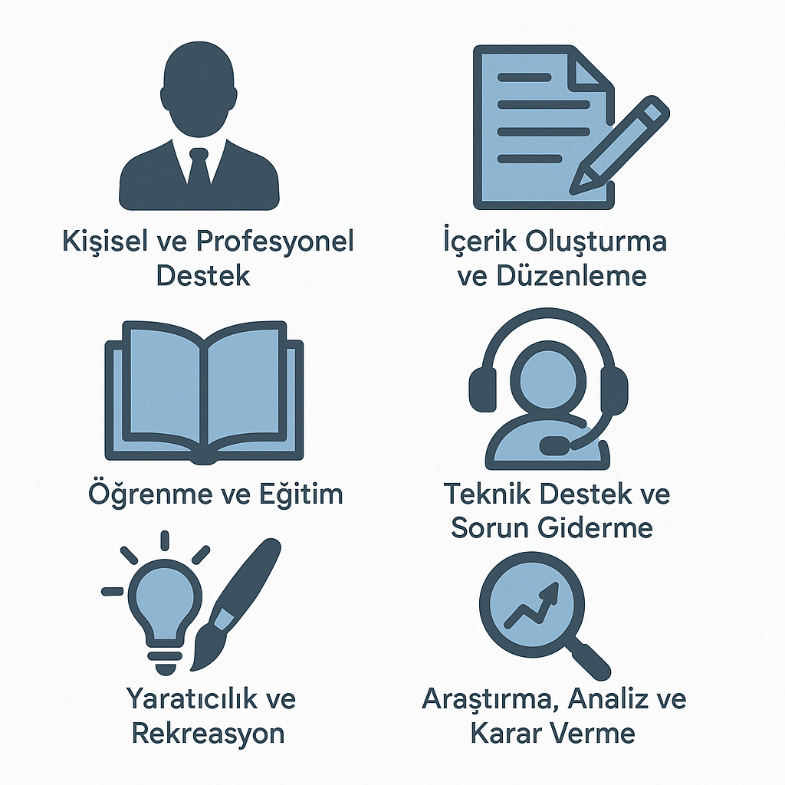

Sesli Dinle
2025’te Gen AI, teknolojik bir yenilik olmaktan çıkıp pratik bir araca dönüştü. Geçen yıl HBR’nin viral infografiği, kişisel ve profesyonel kullanım arasındaki dengeyi ortaya koymuştu. Bu yıl, kullanım alanları çeşitlenerek duygusal odaklı senaryolar öne çıkıyor. Custom GPT’ler, DeepSeek ve Grok gibi yeni oyuncular, ve Google’ın NotebookLM gibi yenilikçi araçları rekabeti artırdı. OpenAI’nin tek arayüz yaklaşımı kullanım kolaylığı sağlarken, zincirleme düşünce (chain of thought) özelliği derin yanıtlar sunuyor. Sesli komutlar ve düşen maliyetler, Gen AI’yi daha erişilebilir kılıyor. Ayrıca, yapay zeka hakkında aşırı olumlu ya da aşırı olumsuz gelecek beklentileri tartışılırken, büyük dil modellerinin (LLM’ler) tavsiyeden eyleme, yani “agentik davranışa” geçişi öngörülüyor.
HBR’da yayımlanan makaleye buradan erişebilirsiniz.
Kullanıcılar Şu Anda Neler Yapıyor?
Kullanıcılar, Gen AI’yi hem iş hem de kişisel hayatlarında yoğun bir şekilde kullanıyor. 100 farklı kullanım senaryosu, altı ana tema altında toplanıyor:


“Kişisel ve Profesyonel Destek” en baskın tema olarak öne çıkıyor.En yaygın 10 kullanım senaryosu ise şunlar:
1️⃣ Terapi ve arkadaşlık – Özellikle ruh sağlığı hizmetlerinin sınırlı olduğu bölgelerde, Gen AI duygusal destek sağlıyor.
2️⃣ Hayatımı düzenleme – Kullanıcılar günlük görevlerini planlamak için Gen AI’ye yöneliyor.
3️⃣ Amaç bulma – İnsanlar, yaşamlarına anlam katmak için yapay zekadan destek alıyor.
4️⃣ Öğrenmeyi geliştirme – Eğitimde Gen AI, öğrenme süreçlerini kişiselleştiriyor.
5️⃣ Kod üretme (profesyoneller için) – Yazılım geliştiriciler kod yazımını hızlandırmak için Gen AI kullanıyor.
6️⃣ Fikir üretme – Yaratıcı projelerde ilham almak için Gen AI’ye başvuruluyor.
7️⃣ Eğlence ve saçmalık – Kullanıcılar, eğlenmek ve yaratıcı oyunlar için Gen AI ile etkileşime geçiyor.
8️⃣ Kodu iyileştirme (profesyoneller için) – Kod kalitesini artırmak isteyenler Gen AI’den faydalanıyor.
9️⃣ Yaratıcılık – Sanat ve tasarım gibi alanlarda Gen AI yaratıcı süreçleri destekliyor.
🔟 Daha sağlıklı yaşam – Kullanıcılar, sağlıklı yaşam alışkanlıkları geliştirmek için Gen AI’den yardım alıyor.
Amaç ve Anlam Arayışı
Gen AI, kullanıcıların kendilerini gerçekleştirme yolculuklarında önemli bir rol oynuyor. İnsanlar, yapay zekayı yalnızca teknik görevler için değil, hayatlarına anlam katmak ve amaç bulmak için kullanıyor. “Hayatımı düzenleme” ve “kişisel hedeflerime ulaşma” gibi senaryolar, Gen AI’nin verimlilikten öte, derin bir insan deneyimi sunduğunu gösteriyor. Bu, teknolojinin bireylerin içsel motivasyonlarına hitap ettiğini kanıtlıyor.
Kendi Başımıza Düşünmek
Gen AI, kullanıcıların daha bilinçli ve eleştirel düşünmesine olanak tanıyor. 2025’te insanlar, yapay zekanın yanıtlarını sorguluyor ve kendi karar alma süreçlerini desteklemek için kullanıyor. Zincirleme düşünce gibi özellikler, karmaşık sorunlara derinlemesine yaklaşımı teşvik ediyor. Bu, Gen AI’nin bir otorite değil, düşünceyi zenginleştiren bir ortak olarak görüldüğünü ortaya koyuyor.
Daha Bilgili Kullanıcılar
2025’te kullanıcılar, Gen AI’nin sınırlarını ve önyargılarını daha iyi anlıyor. 2024 ABD seçim yılında, yapay zeka yanıtlarının siyasi olarak taraflı veya aşırı hassas olduğu yönündeki algı yaygınlaştı. Bu durum, bazı kullanıcıların yapay zeka hizmetlerine olan güvenini sarsarak aboneliklerini sonlandırmalarına yol açtı. Ancak bu şüphecilik, teknolojinin değerini gölgelemiyor. Kullanıcılar, Gen AI’yi bilinçli bir şekilde kullanıyor, kişisel ve iş ihtiyaçları için özelleştirilmiş çözümler talep ediyorlar. Kullanım senaryoları, bu iki alan arasında eşit dağılıyor.
Sırada Ne Var?
Gen AI’nin geleceği, erişim ve güven arasındaki dengeye bağlı. Maliyetlerin düşmesi ve yeni özelliklerin eklenmesiyle teknoloji daha geniş kitlelere ulaşıyor. Kullanıcıların agentik davranış beklentisi, yani yapay zekanın bilgi vermekten ziyade görevleri yerine getirmesi, geliştiriciler için yeni bir odak noktası. Örneğin, abonelik iptali gibi pratik görevlerin otomatikleştirilmesi, Gen AI’nin daha işlevsel hale geleceğini gösteriyor. İş dünyasında içerik üretiminden pazar araştırmasına kadar süreçler dönüşürken, bireyler için duygusal destek ve kişisel gelişim aracı olarak önemini koruyacak. Gen AI, insan odaklı bir yaklaşımla, zihinsel ve duygusal ihtiyaçlara hitap eden bir gelecek vaat ediyor.